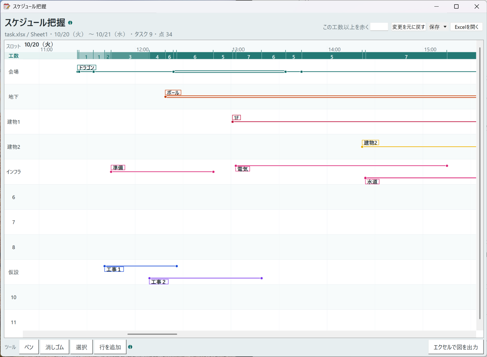
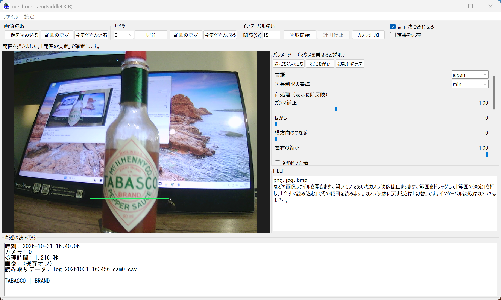

実験補助、事務作業、工場管理、などに役立つソフトと、ゲーム動画関係のフリーソフトを作成しています。
リンク先のGITHUBのページのキューブマークのZIPからダウンロードできます。すべてフリーソフトです。最新版を選んでください。
kamishivy専用ページkamishivy：次へボタンで表示を切り替えるアプリ
たぶん、感覚で使えます。
スケジュールの可視化アプリです。線をクリックで工数も可視化できます。エクセルでできたガントとしても出力可能です。編集ファイルのデータをエクセルのデータファイルとして出力可能。データの書かれたエクセル側を編集して読み込むことも可能です。あくまで会議する人たちのための可視化用で、予定を立てるのはこんなの使わずに現場の人たちが考えたほうが早いです。

カメラを設定→読み込む範囲を設定→読み込み（インターバルで定期読込もできます）
カメラ映像、または画像ファイルの指定範囲を PaddleOCR で読み取るソフトです。インターバル読込も可能。結果を CSV に追記します。読み込みパラメーターは適当に弄って遊んでください。500Mあります!!